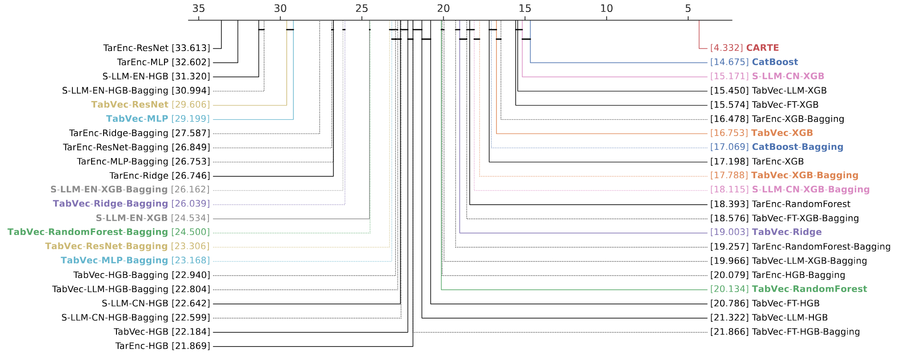
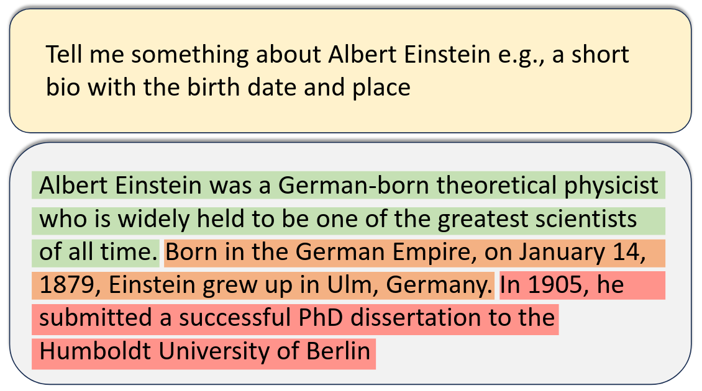
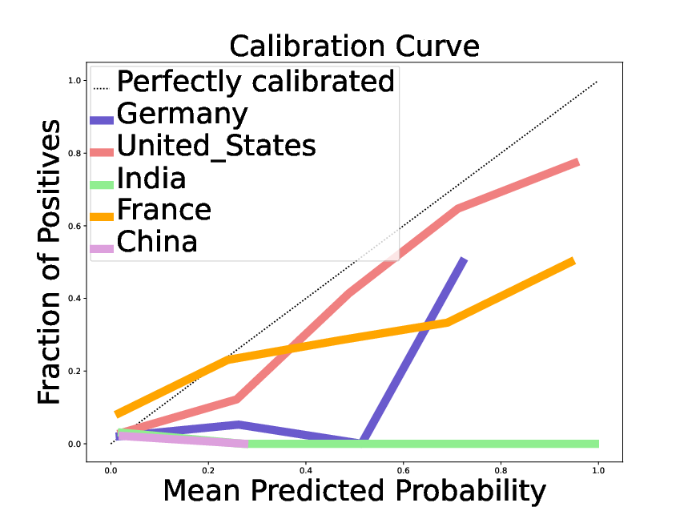

Note
For me, 2024 was full of back and forth between research, software, and connecting these to society. Here, I lay out some highlights on AI and society, as well as research and software, around tabular AI and language models.
As 2025 starts, I’m looking back on 2024. It was an interesting professional year, as the research in the soda team on machine learning for health and social science nourished reflection on society.
Highlights
Thoughts from the national AI committee
Early 2024, I was serving in the French national AI committee. Our final write up can be found here.
It was a ton of work, a very interesting experience, and I learned a lot on many aspects of the interfaces between technology, policy, and society. A few things that stood out for me, some partly obvious but worth saying:
Digital services are a growing economy. The share of the economy that is digital keeps growing, whether we like it or not (IMHO, most of us spent too much time on our phones…). For France, or Europe, there is no question: we must produce our share of digital services and innovation, else our economic balance suffers.
Privacy is erroding. Whether it is social network, information leaking into search engines or training of large language models, or people uploading private information to chatGPT, private information is more and more available. History has shown us the dangers behind loss of privacy, which the powerful (governing or economical elites) typically leverage to assert more power. Europe has had a long stance of trying to mitigate this loss of privacy via regulation (GDPR). But regulating services that we don’t control is hard, and it ends up being a geo-political and economical battle.
Big AI is huge. The size of investments in AI is huge (dozens of billions yearly, comparable to a sizeable fraction of the state expenditures of a rich country like Switzerland). Data centers are having significant impacts on the electric grid of modern countries, running in competition with other usage. The cost of large models have ballooned (training a large language model is in the hundreds of millions of cost, which is comparable to a sizeable fraction of the budget of the national research institute that I work in (inria). Training costs are just the visible part of the iceberg, operational costs are huge and are everywhere.
Not all in tech are worried about rising costs. Indeed, they go hand in hand with more money in tech, making us, tech bros, richer, as long as investments keep pouring in. But bubble dynamics are at play, and explain part of the conversation around AI.
Concentration of power. Many factors in today’s AI lead to concentration into the hands of large actors. Training and operation costs, of course. But also limited access to the correspond skills, platform effect on the data and the users. The most striking bottleneck is the compute hardware. Only one company makes the chips that we all need. Few actors can afford buying them; and as a result most of the world lives from renting out to big landlords.
AI neither good nor bad, but what we do of it. The above may paint a gloomy picture. But this is not how I see it. AI does have a lot of potential for good, as all general purpose technology. It all depends how society uses it. And here the future is open: we, as actors of democratic societies, as innovators, in tech but in every aspects of society, we can determine what the future of AI is. I look forward to technology that empowers each and everybody, to act for their own benefit. Key to this future is enabling and bringing in every stakeholder.
Adventures in software land
With the growing importance of data and artificial intelligence in shaping society, I believe more than ever in the importance of open source and commons for data science, making tools accessible to as many as possible.
probabl to supercharge scikit-learn
Early 2024, Inria span off the scikit-learn development to a new structure, probabl, to supercharge the development of the broader ecosystem. I detailed the motivation and the goals in a previous article. In a nutshell:
- Scikit-learn is a key component of the machine-learning ecosystem, but its development require funding.
- Probabl is there to foster a broader open data-science ecosystem, as scikit-learn can be sustainable only when used in such ecosystem. Probabl focus on delivering value to enterprises, and thus makes sure that there is a seamless solution to their needs.
- I have 10% of my time allocated from Inria to Probabl.
Some of our successes are already publicly visible:
- The open-source team at probabl is maintaining and improving a range of software libraries: scikit-learn, joblib, imbalanced-learn, fairlearn, skops, skrub… Our priorities are openly discussed here.
- We have launched an official certification program for scikit-learn. I’m very excited about these certifications (there are three levels), to grow recognition in the scikit-learn skills, and thus make sure that it is a dependable stack for the industry.
Skrub: machine learning on tables made easy
skrub is a software project that I am very excited about. Many crucial applications of machine learning are on tables. Skrub facilitates the corresponding patterns. We are designing it with the insights of years of research and practice on the topic. It does not always look impressive, but it’s little things that add up for productivity.
A typical dataset is the employees one:
>>> from skrub.datasets import fetch_employee_salaries >>> dataset = fetch_employee_salaries() >>> employees_df, y = dataset.X, dataset.y
Skrub’s TableReport makes it really easy to interactively visualize and explore such table:

The dataframe employees_df has plenty of non numerical columns, as visible above. Skrub’s TableVectorizer turns it into a numerical array suitable for machine learning, taking care of dates, categories, strings…
>>> from skrub import TableVectorizer >>> X = TableVectorizer().fit_transform(employees_df)
If you want to use deep-learning language models for the string categories, skrub’s TextEncoder can download pre-trained models from hugginface:
>>> from skrub import TextEncoder
>>> text_encoder = TextEncoder(
"sentence-transformers/paraphrase-albert-small-v2",
device="cpu",
)
>>> tab_vec = TableVectorizer(high_cardinality=text_encoder)
>>> X = tab_vec.fit_transform(employees_df)
With this, the latest artificial intelligent developments are easily brought to drive decisions on the data that matters.
Research: better AI tools, more understanding
Software or thoughts on AI and society, are best built on solid understanding of AI, which calls for research.
Table foundation models
Modeling data semantics enable pretaining for tables
I have been working on machine-learning for tables for more than a decade. These data are crucial for many applications, but they have so far not witnessed the breakthroughs of deep learning seen eg in vision or text. Much of these success of deep learning as been driven by the ability to reused pretrained models, fitted on very large datasets. Foundation models pushed this idea very far with models that provide background information useful for a wide variety of downstream tasks. But pretraining is challenging for tables.
A crucial part of foundation models for text and images is the attention mechanism, stacked in a transformer architecture, that bring associative memory to the inputs by contextualizing them. We had a breakthough with the CARTE model: we managed to adapt these ideas to tables. The strings –tables entries and column names– give the information that enables transfer from one table to another: data semantics. Here, key is to have an architecture that 1) models both strings and numerical values 2) applies to any set of tables while using the column names to route the information. For this purpose, CARTE uses a new dedicated attention mechanism that accounts for column names. It is pre-trained on a very large knowledge base. As a result, it outperform the best models (including tree-based models) in small sample settings (up to n=2000).
The pretrained CARTE model is available for download as a Python package.
This result is very significant as it opens the door to foundation models for tables: models that embark much background knowledge and can be specialized to many tabular-learning tasks.

Extensive empirical results show that CARTE brings benefits to very broad set of baselines. The relative performance of baselines also contains interesting results.
See also
I wrote a longer high-level post on CARTE.
Disparities of confidence of large language models

A good confidence assessment on replies of an LLM would separate out correct from incorrect statements: Einstein was not born on Jan 14th 1879 (close call, it was March 14th); his PhD was in Zurich.
Large language models (LLMs), such as chatGPT, may produce answers that are plausible but not factually correct, the so-called “hallucinations”. A variety of approach try to assess how likely a statement is to be true, for instance by sampling multiple responses from the language model. Ideally, we would like to use these confidence assessments to flag the wrong statements in an LLM’s answer. For this, a challenge is to threshold them, or assign a probability of correctness.

Observed error rate and a function predicted probability of correctness For the birth date, when a large language model (here Mistral 7B) gives information on a given notable individual. The different curves give the corresponding calibration for different nationalities of the individuals, revealing that the probability is much more trustworthy for a citizen of the United States than for other countries, and particularly poor for people that originate from South-East Asia.
In Chen et al, we investigate the confidence of LLMs in their answers. We show that the probabilities computed are not only overconfident, but also that there is heterogeneity (grouping loss): on some groups of queries the overconfidence is more pronounced than on others. For instance, for an answer on a notable individual, the LLMs’ confidence is reasonably calibrated if the individual is from the United States, but severely overconfident for individuals from South East Asia (fig:llmconfidencenationality). Characterizing the corresponding groups opens the door to correcting the corresponding bias, a “reconfidencing” procedure.
This study is an application of our earlier, more theoretical, work that contributed the first estimator grouping loss, a mathematically-solid concept behind hidden heterogeneity in classifier calibration. I am very happy to see that these fairly abstract ideas are useful to probe very concrete problems such as the disparity in LLM confidence across nationalities.
A straggler: Consistency of supervised learning with missing values
A paper on the fundamentals of machine-learning with missing values
In 2018, Julie Josse, Erwan Scornet, and myself started working on the theory of how supervised learning works with missing values (learning theory). Working an intern, Nicolas Prost, we quickly realized that there was a gap between the statistical thinking around missing values, which was focused on enabling inference in parametric models as if their were no missing values, and the needs for prediction with missing values.
We wrote a paper to lay out the theory cleanly, summarizing both elements of learning theory and the fundamentals of statistics with missing values. Beyond this didactic aspects, the paper gives a series of formal results, such as the need for multiple imputations to be able to use the complete case predictor (the optimal predictor without missing values), the optimal way to model missing values in trees (which was already used in XGBoost :) ), and the fact that asymptotically, constant imputation of missing values could work well for predictor.
Frustrations of the academic game
The preprint got a lot of success (more than a hundred citations), probably because it laid out fundamentals. But it took 5 years to publish it. The machine learning community did not like the absence of new methods (we only gave theoretical results on existing practice, such as imputation). The statistics literature really did not like our messages that imputation was not always important. In one journal, a reviewer rejected the paper on the basis that it was giving bad messages to the community, but not arguing that anything was wrong in our proofs or our experiments. Of course, there is a lot to say about the difficulties of doing data analysis with missing values, but the conversation did not go in these details. This is a good illustration that progress in science is social, and is as much about shifting norms than accumulating knowledge (actually, knowledge is social too, as put forward by social epistemology).
As time went by, my colleague Marine Le Morvan has published more and more results that push deeper understanding of prediction with missing values. But I still see value in our original paper, as it lays the foundations.
The paper is now out, thanks to my coauthors who kept replying to reviewers, improving the manuscripts, and resubmitting. Read it, I think that it is a good read.
Well, this article ended up longer than I had expected. Thanks for reading. Taking a step back to figure out what is important is always a good exercise for me.